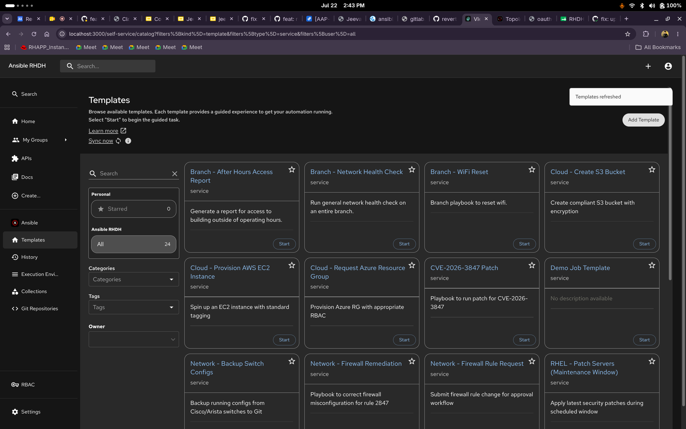
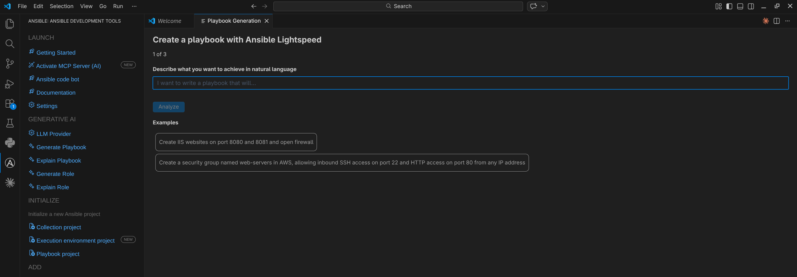
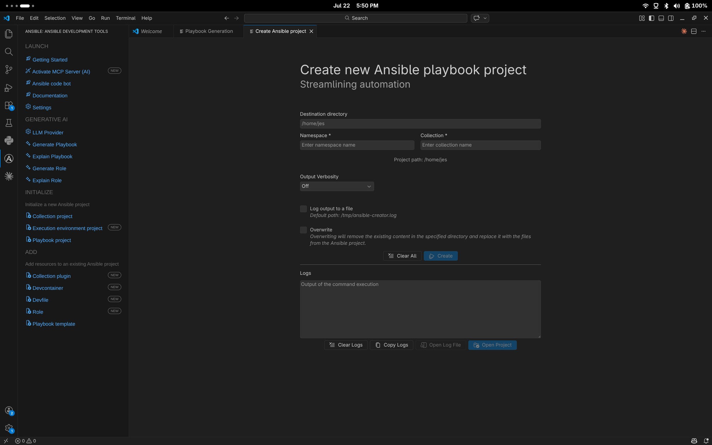
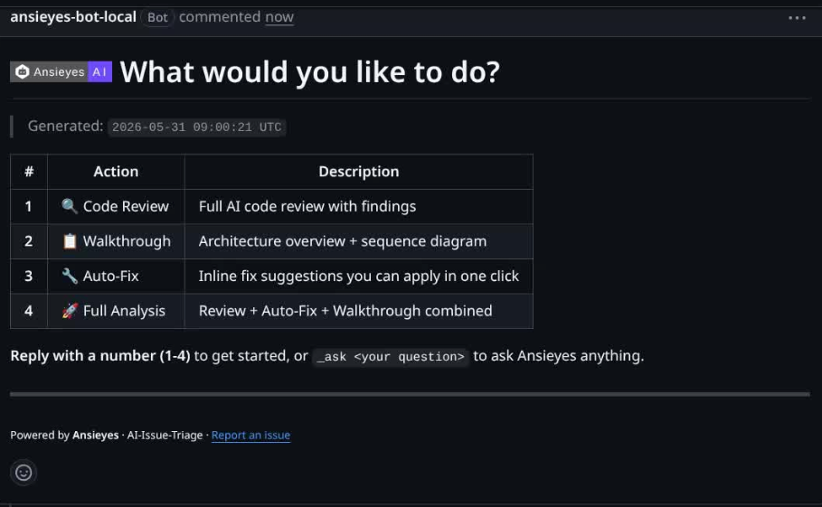
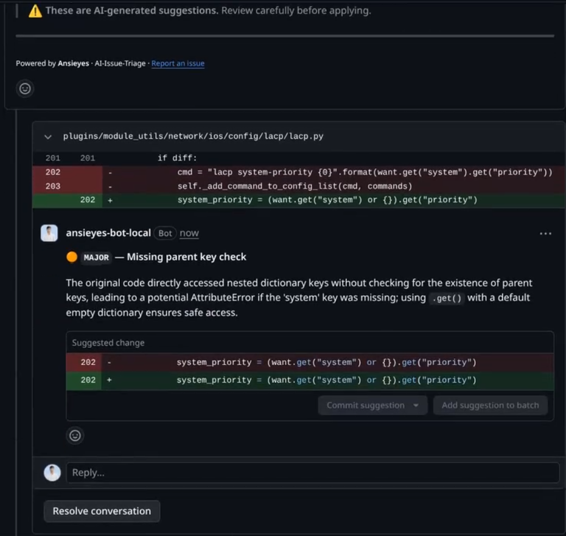
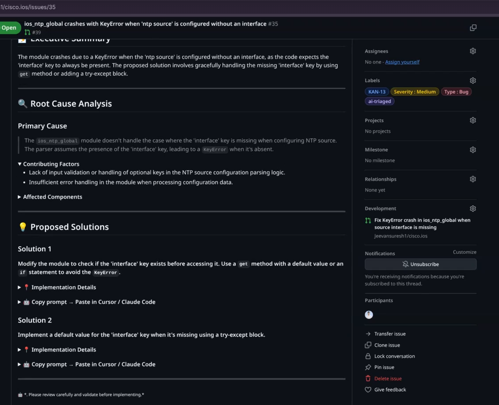
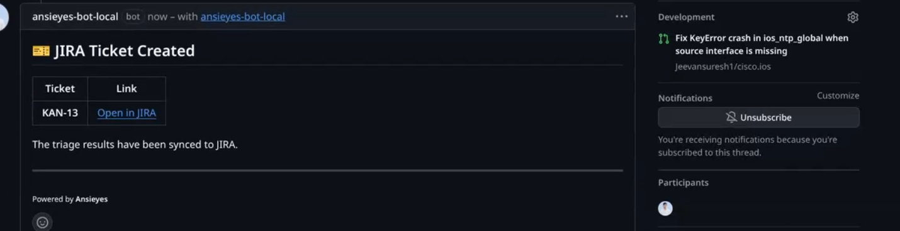

Intern End-Term Presentation · Global Engineering (GE) Internship Program 2026
Portal · Extension · AI Bot
Red Hat's enterprise platform for building, running, and managing IT automation at scale. Combines multiple open-source Ansible tools into one supported product used by thousands of enterprises.
My team (Ansible/Anvil): Develops the Self-Service Portal, the web UI layer on top of AAP.
A self-service web UI built on Red Hat Developer Hub (Backstage framework). Gives teams a single place to discover collections, run job templates, and manage automation without CLI expertise.

Built on Red Hat Developer Hub (RHDH), the enterprise distribution of Backstage by Red Hat. Gives teams a single place to discover collections, launch job templates, and manage automation. Open source upstream: github.com/ansible/ansible-backstage-plugins
A core portal feature that lets users build custom Ansible Execution Environments from the UI without writing Dockerfiles.
Dynamic plugin loading on OpenShift via portal-chart
bootc container builds VM images for standalone install (no cluster needed)
Plugins bundled as tar.gz for air-gapped and disconnected environments
Built a Backstage plugin (ansible-mcp-tool) that exposes portal data to AI assistants via the Model Context Protocol (MCP). All 6 tools authored by me.
1. Data locked in the UI
The portal holds collections, templates, and EEs but this data is only accessible through the web interface. AI assistants cannot reach it.
2. MCP bridges the gap
MCP (Model Context Protocol) is an open standard that lets AI tools call server-side functions over JSON-RPC 2.0, running inside the RHDH backend.
3. Works with any AI client
Claude Code, Cursor, Copilot, or any MCP-compatible client can now query, analyze, and manage portal resources directly from the IDE.
Fix job templates not appearing after sync (AAP-52257). Added automatic catalog reload after sync with change detection.
Fix sast-unicode-check pipeline failure (AAP-82255) + update submodule for security fixes (AAP-83664). Unblocked v2.2.4 release.
Issue: Collections page loaded the entire dataset (~58MB) on every visit, causing slow load times.
Fix: Rewrote with server-side pagination using catalogApi.queryEntities(), loading only the requested page.
Result: Reduced page payload to ~6KB per request. 9 files changed, 24/24 tests passing.
PR #227: Replaced IFS-based string splitting with parameter expansion.
PR #257: Added distinct exit codes: 10 = parse error, 11 = missing key.
PR #227: Removed reference docs from production config, separated into example file.
PR #205: Added proper resource requests and limits to container spec.
Cloud detection fell back to unauthenticated IMDSv1.
PR #205: Removed fallback entirely, fail-safe instead of fail-open.
Registry auth.json created with mode 644.
PR #227: Set chmod 600 after login and logout.
Config values interpolated directly into psql commands.
PR #227: Added regex validation + PostgreSQL variable binding.
ATF integration tests for superuser permission fix (AAP-81227). Validates non-admin user access to portal features.
v2.2.2 v2.2.3 v2.2.4 Owned end-to-end across 5 coordinated repositories.
v2.2.3 Managed full release lifecycle. Resolved 8 staging blockers on Jul 1.
v2.2.4 Discovered and fixed broken Tekton pipeline, stale task bundle SHA (PR #704).
A VS Code extension by Red Hat that turns VS Code into a full-featured Ansible IDE. Open source: github.com/ansible/vscode-ansible


Add Documentation for RH AI Provider in Ansible VS Code Extension. 238 lines covering setup (3 methods), configuration reference, usage guides, security considerations, and troubleshooting.
Manual validation of RH AI provider integration. Covered playbook/role explanation, error scenarios (network issues, invalid config, provider failure), and provider isolation.
Implement unit test cases for the new webview component in the VS Code Ansible extension.
Implement unit test cases for the Red Hat AI provider integration in the VS Code Ansible extension.
A GitHub App powered by Gemini AI that automates issue triage and PR review. Improved by me.
Triggered by commenting \ansieyes on any issue or pull request.
\ansieyes on a PR to get a numbered menuAlso: auto commit summary on every push, prompt injection protection, per-repo configs




2 automation skills, 11 phases total
Jeevan S | Intern, Ansible(Anvil) | Manager: Anand Singla | Mentor: Abhishek Chaudhary
Press any key to close